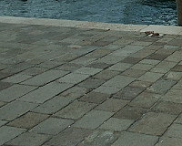
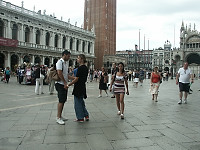
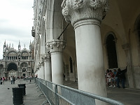
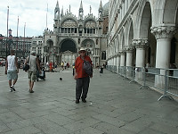
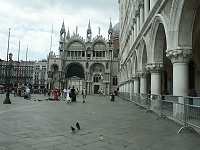
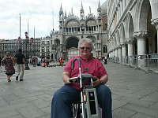
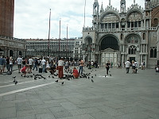
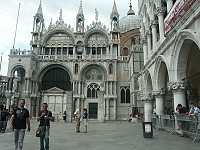
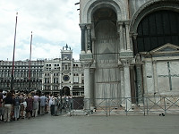

|

Thank goodness I had my mobility cart so I didn't have to use the wheelchair here. |
Beautiful columns in San Marco Square. |

San Marco Square |

|
|

Johnnie on the square - carrying everything in front for protection sake. |

|

Obie, happily united with her mobility scooter. |

San Marco Bascilica |
|

|

The crowds lining up to see various sights were horrendous and most places were closed to us because they didn't have handicap access. |